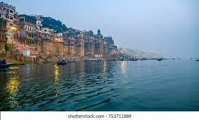

Places Where to Explore
Ghats in Varanasi are riverfront steps leading to the banks of the River Ganges. The city has 88 ghats. Most of the ghats are bathing and puja ceremony ghats, while two ghats are used exclusively as cremation sites Most Varanasi ghats were rebuilt after 1700 AD, when the city was part of Maratha Empire.[2] The patrons of current ghats are Marathas, Shindes (Scindias), Holkars, Bhonsles, and Peshwes (Peshwas). Many ghats are associated with legends or mythologies while many ghats are privately owned. Morning boat ride on the Ganges across the ghats is a popular visitors attraction.